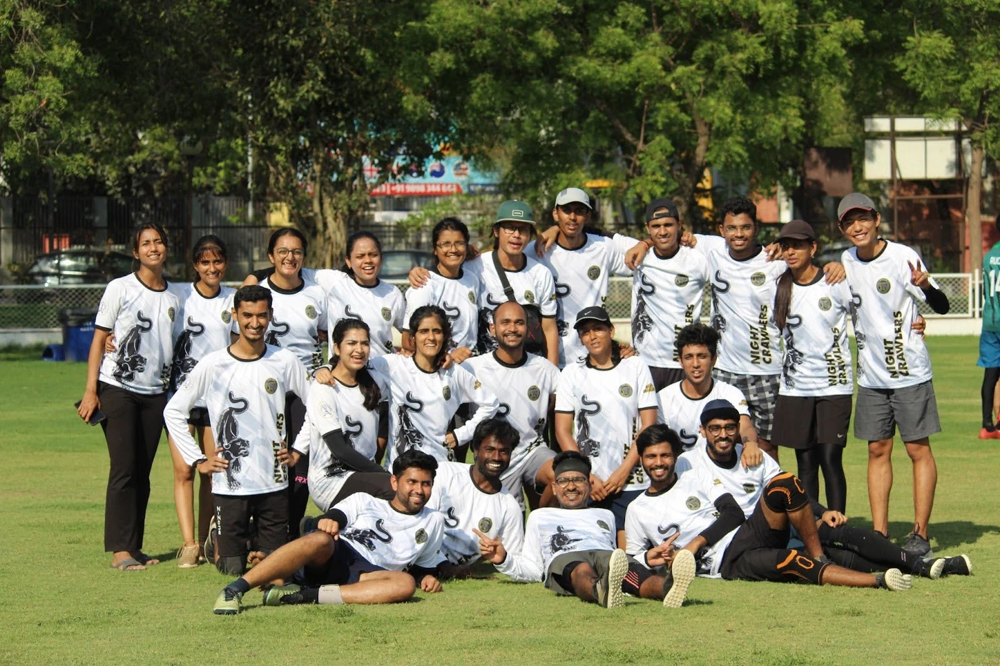
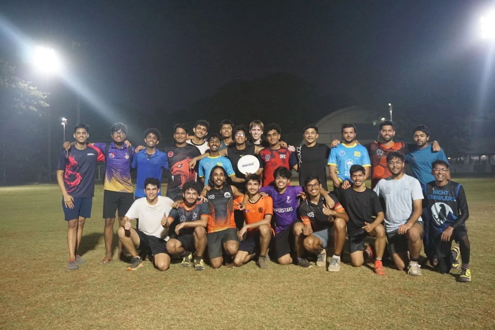
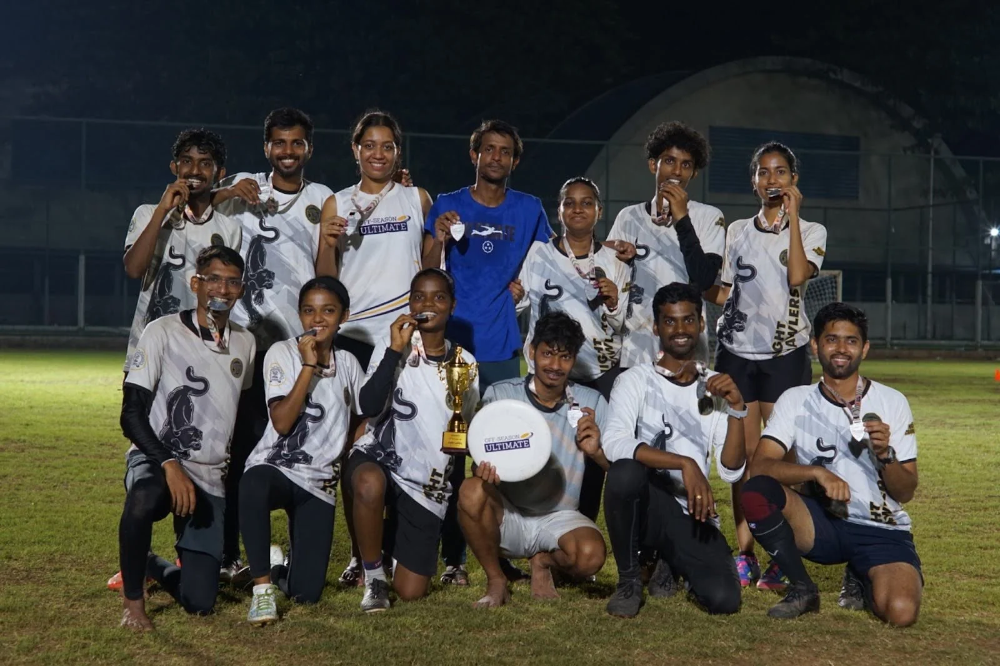
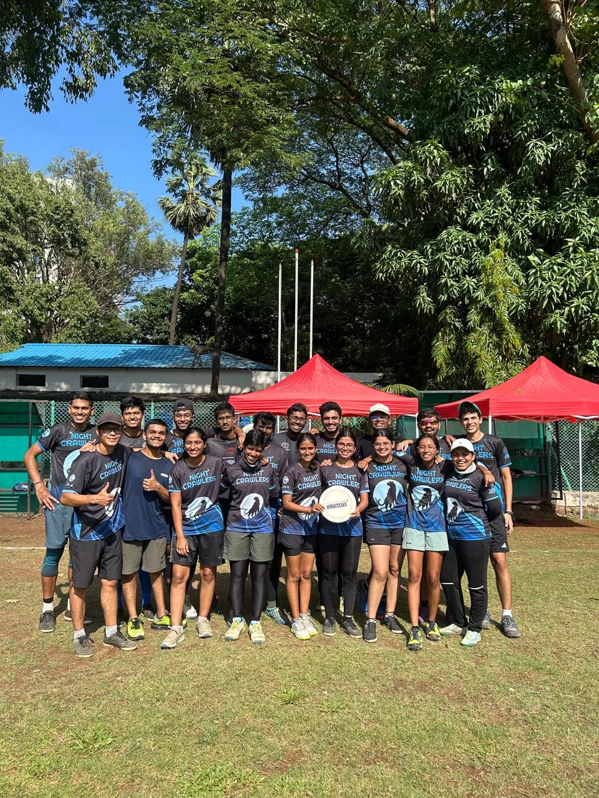
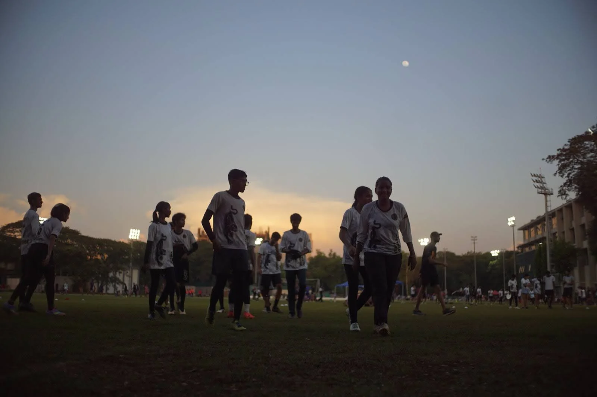
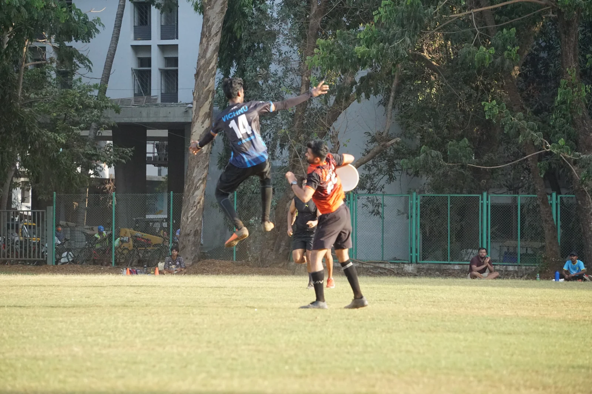

General Championships
The club’s inter-hostel competition brings campus players together on the Ultimate field.

An open field.
A game built on connection.
Ultimate Frisbee Club
A disc. Some open space. Someone to pass to. The first connection is a simple one.
IIT Bombay’s Ultimate Frisbee Club brings undergraduates, postgraduates, staff and alumni into a shared game. A student community grew into a formally inaugurated club in 2022, with camps, championships and an open tournament.
Ultimate is a non-contact, self-officiated team sport. Move the disc by passing to team-mates, with fair play at the heart of every exchange.
Find your first sessionThe kit / The space
The club archive lists discs, cones, markers and bibs for practice, camps and tournaments. Ask about equipment when arranging your first session.
Football ground · Hockey ground
Outdoor Turf · Indoor Turf · Kho-Kho area
These grounds are named in the archived club introduction. Confirm the current venue, access and equipment with the club; sessions are not a standing booking.
Ask where to meetStart small / Play together
Camps to get you started. Competitions to grow into. Five ways the archive describes club life.
The club’s inter-hostel competition brings campus players together on the Ultimate field.
An introduction to throws, movement and the shared responsibility of a self-officiated game.
A welcoming setting for women on campus to learn skills and build confidence in the sport.
UFO brings teams and players from the institute and beyond together on IIT Bombay’s grounds.
The archive records participation in NCUC, West Sectionals and Aavhan, with connections to the Mumbai Ultimate Community.
Event descriptions from the institutional archive, captured 18 October 2026. Check with the club for current dates, eligibility and registration.
Ask about what’s nextMore than the score
Spirit of the Game puts responsibility in the players’ hands: know the rules, listen to one another and resolve disagreements with respect.
Results recorded in the institutional archive. The Spirit trophies sit alongside the medals.
Spirit of the GameHistorical results from the archived timeline; these are not current season standings.
A game shared
Early throws, shared evenings and a team around you. Six photographs from the club archive. Open any one to look closer.






Original archival photographs. Exact dates, events, venues and participant identities are unverified.
Bring yourself / We’ll start there
Completely new to Ultimate? Ask about a beginners session, what to bring and where the club is meeting. Already playing? Find out about practice and the next competition.
Contact the sports officeThere’s always room
for one more connection.
New to the game? Explore the official rules ↗
The field above is an original, stylized scene. The photographs are from the club’s institutional archive.
Keep discovering
Yogastha ↗